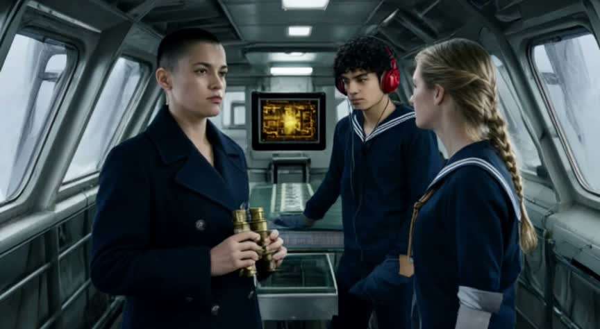
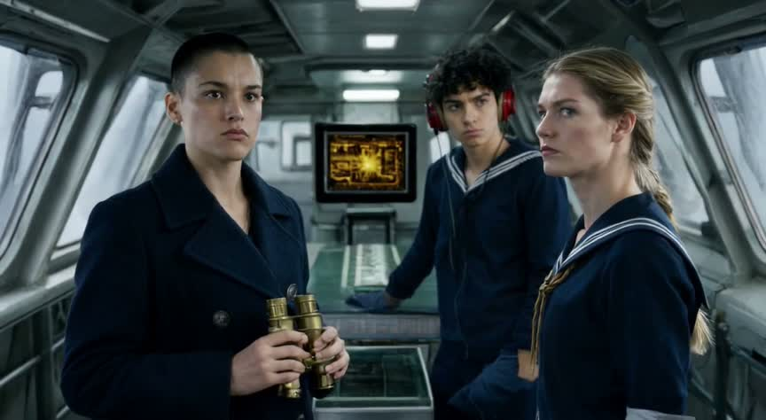
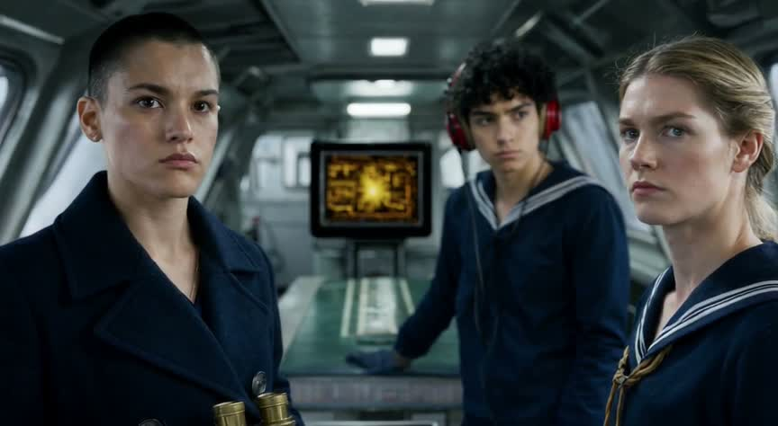
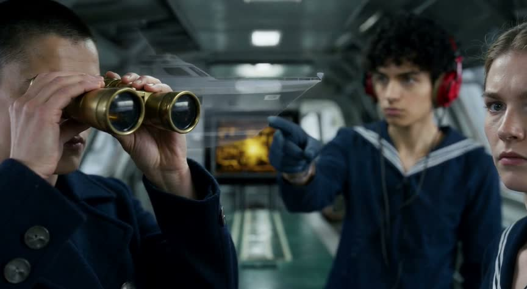
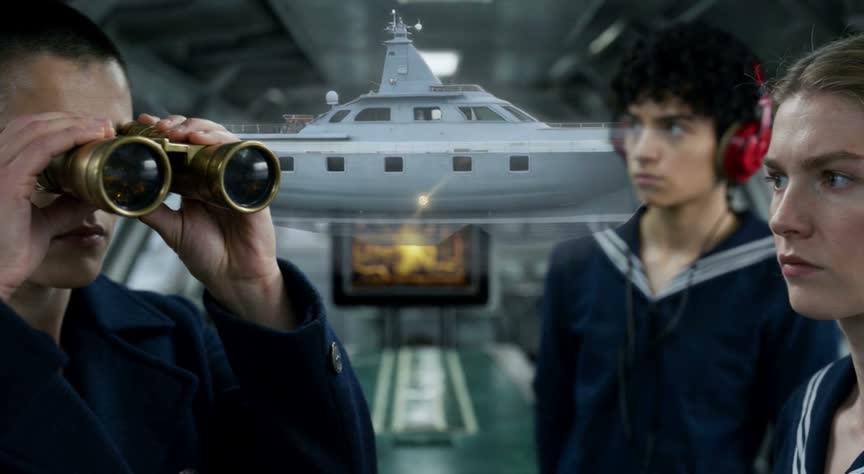
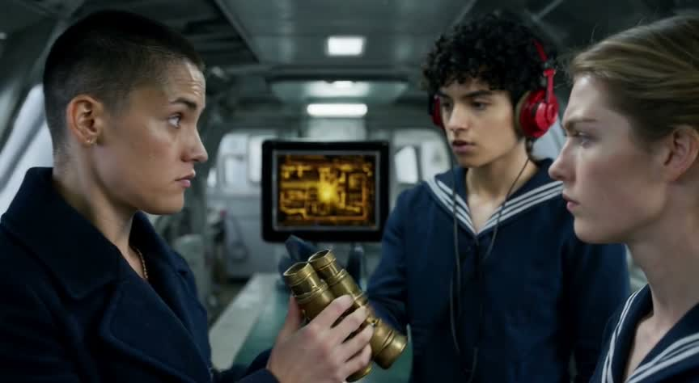
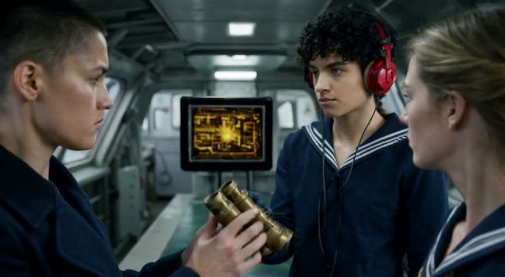

A: case 1, words only
clip-1-retry · ltx-2.5 text-to-video · 15 s · audio on · 720 credits in all (2 attempts) · own review no


heard: [0–1 s] Fire main battery! [4–5 s] Fire main battery! [9–10 s] Fire main battery!
review
| beat 1 | yes no | Lookout and cruiser are visible, but no clear pointing gesture; the bridge is open, without windows. |
| beat 2 | yes yes | Vale holds binoculars to her eyes toward the cruiser. |
| beat 3 | yes unclear | Console screen shows a map and red marker; marker movement cannot be established from the sampled frame. |
| beat 4 | yes unclear | Vale is visible using binoculars. The transcript places the command at 9–10 seconds, but does not identify its speaker. |
| beat 5 | yes no | Wide bridge view includes Vale and crew, but the foreground sailor is seated rather than standing; stillness is unconfirmed. |
failures: beat 1 (0–3 s) must visibly show the action: Lookout points out the enemy cruiser through the bridge windows. (seen instead: Lookout and cruiser are visible, but no clear pointing gesture; the bridge is open, without windows.); beat 5 (12–15 s) must visibly show the action: Wide bridge establishing view, Vale and crew standing still. (seen instead: Wide bridge view includes Vale and crew, but the foreground sailor is seated rather than standing; stillness is unconfirmed.)
prompt sent (1824 chars)
Create a 15-second naval-war scene aboard Resolute, 16:9. Realistic photography, cold late-afternoon daylight, steel textures, tension, decisive pacing. Five coherent shots preserve Vale, a woman with cropped dark hair, navy double-breasted coat and brass binoculars; lookout, a young man with curly black hair, navy sailor shirt and red headset; helmsman, a woman with blond braid, navy sailor shirt and rolled sleeves; bridge, narrow steel with slanted front windows, central chart table and cool lamps; sea, slate-blue, low swells, flat horizon, thin overcast; Resolute, dark-gray dreadnought, twin-gun main turrets, red band around forward funnel; enemy cruiser, pale-gray, one raked funnel, white bow stripe; tactical screen, small, square, thick black bezel, amber graphics. 0–3 seconds: medium over-shoulder, lookout, headset visible, points out enemy cruiser through glass against sea; lateral slide. 3–6 seconds: tight profile, Vale presses both binocular eyepieces to her eyes, visibly looks through to confirm contact, window reflections across her face; slow push in. 6–9 seconds: insert close-up, tactical screen tracks cruiser: amber contact marker visibly moves across screen throughout shot, steel console surrounding it; gentle push in. 9–12 seconds: medium close-up, Vale, binoculars raised, commands fire, cool lamps behind; short push in. 12–15 seconds: wide bridge view, Vale, binoculars raised, and all crew, including lookout and helmsman, stand still beside chart table, upright bodies and planted feet visible; ease back into final hold. Sound: low engine rumble, faint hull creaks; 9–12 seconds, Vale says, "Fire main battery!" Hold the final image still for the last two seconds. Cool steel-blue shadows, restrained saturation, warm amber highlights. No subtitles, text overlays, music or gunfire.
B: case 3, premade still as start frame
clip-2 · ltx-2.5 image-to-video from the still · 15 s · audio on · 720 credits in all (2 attempts) · own review no







review
| beat 1 | yes yes | The opening is a medium three-shot. By 1.5 s the lookout faces forward with a focused expression, and the framing begins tightening. The distant contact itself is not visible through the windows. |
| beat 2 | yes no | At 4.5 s the lookout still has his hand resting on the chart table rather than pointing through the windows. Pointing appears in the 7.5 s sample, one beat late. |
| beat 3 | yes yes | At 7.5 s Vale has the binoculars raised while the lookout points forward along her viewing direction. The helmsman remains alert and faces forward, although course controls are not shown. |
| beat 4 | yes unclear | The amber tactical display remains visible, but the samples do not establish contact tracking. At 10.5 s the lookout appears to look forward rather than clearly transferring his expectant gaze to Vale. |
| beat 5 | yes unclear | By 13.5 s Vale has lowered the binoculars and turned toward the others, with all three faces in tight framing. A firing command cannot be established from the supplied stills, and a two-second final hold is not demonstrated. |
| identity | yes | Captain Vale: Vale retains the reference facial features, very short dark hair, navy double-breasted coat, and brass binoculars throughout the samples. |
| identity | yes | The lookout: The lookout retains his youthful face, curly black hair, navy sailor shirt with striped collar, and red headset. |
| identity | yes | The helmsman: The helmsman retains her facial features, blond braided hair, and navy sailor shirt. Rolled sleeves are visible in the wider opening frames and become cropped out as the camera moves closer. |
| identity | yes | The bridge: The narrow steel interior, slanted windows, central chart table, and cool overhead lamps match the reference and remain spatially consistent. |
| identity | yes | The tactical screen: The same compact tactical display with a thick black bezel and amber graphics remains behind the group. |
failures: beat 2 must visibly show: The lookout points through the windows toward the enemy cruiser, keeping his eyes on it. (seen: At 4.5 s the lookout still has his hand resting on the chart table rather than pointing through the windows. Pointing appears in the 7.5 s sample, one beat late.)
prompt sent (1591 chars)
Create 15 seconds matching the source image. Preserve Vale's cropped dark hair, navy double-breasted coat and brass binoculars; the lookout's curly black hair, navy sailor shirt and red headset; the helmsman's blond braid, navy sailor shirt and rolled sleeves. Keep the narrow steel bridge, slanted front windows, central chart table and cool overhead lamps. Keep the small square tactical screen with a thick black bezel and amber graphics. One continuous medium three-shot with one very slow push inward throughout. 0–3 seconds: continue the starting poses; the lookout spots something beyond the glass, his eyes narrowing with sudden recognition; cold late-afternoon light crosses his face. 3–6 seconds: maintaining his outward eye line, the lookout points toward a pale-gray cruiser with one raked funnel and a white stripe across its bow, visible beyond the windows. 6–9 seconds: Vale confirms the contact through her binoculars, following his pointing direction with controlled concentration; the helmsman's gaze stays forward. 9–12 seconds: beside their faces, the amber display tracks the contact with a moving marker; the lookout watches Vale expectantly. 12–15 seconds: Vale delivers the command, lowering the binoculars just enough to meet the crew's eyes: “Fire main battery!” Finish the push on all three faces and hold the final two seconds. Audio: low engine vibration, restrained bridge creaks; Vale speaks firmly at 12–13 seconds. Cold steel-blue shadows, restrained saturation, warm amber glow; controlled tension becoming resolve. No music, subtitles, overlays or gunfire.